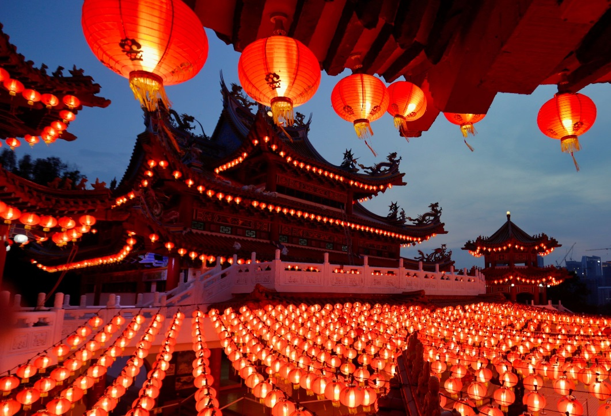

¿Qué es el Año Nuevo Chino?
El Año Nuevo Chino es la festividad tradicional más importante de China. Marca el inicio del calendario lunar y representa renovación, prosperidad y unión familiar.
Durante esta celebración las calles se llenan de faroles, dragones, fuegos artificiales y decoraciones rojas que simbolizan buena suerte y felicidad.
Tradiciones
- Entrega de sobres rojos
- Danzas del dragón y del león
- Reuniones familiares
- Decoraciones rojas
- Fuegos artificiales